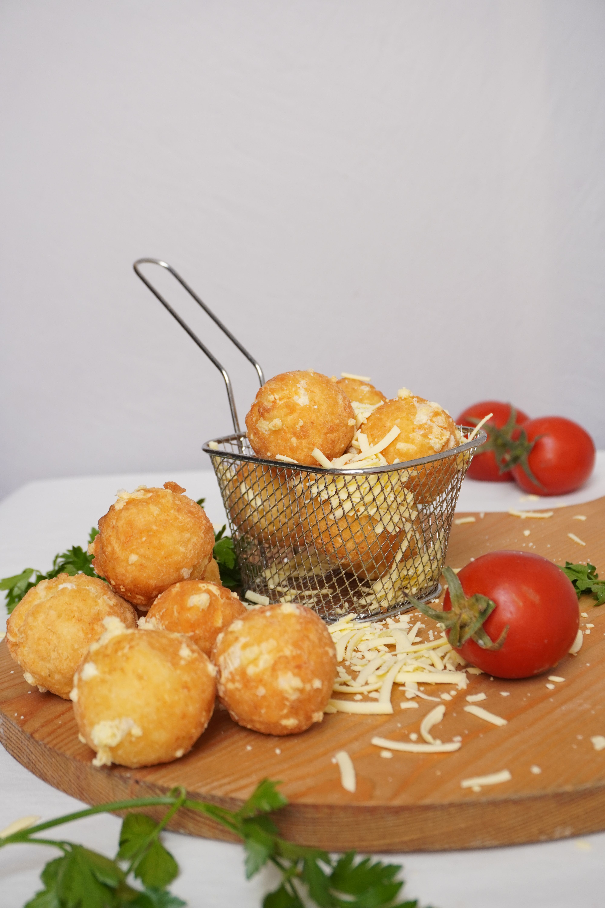

Crispy Cheesy Potato Balls

These crispy, cheesy potato balls are perfectly golden, satisfyingly crunchy, and filling little appetizers. These are wonderful for a large party and take a touch of time to come together. Garlic mashed potatoes plus salty cheese and spicy, zesty ranch combine in a winning bite.
Ingredients:
- 1/4 cup canola oil
- 2 cups panko (Japanese-style breadcrumbs)
- 3 ounces low-moisture whole milk mozzarella cheese, cut into 1/2-inch cubes
- 2 tablespoons all-purpose flour, divided
- 1 (20 ounce) container mashed potatoes, such as Bob Evans
- 1 tablespoon garlic salt
- tablespoon onion powder
- 1/4 tablespoon ground black pepper
- 3 large eggs, divided
- 1/2 cup ranch dressing
- 1 tablespoon Sriracha chile sauce
Steps:
- Heat oil in a large nonstick skillet over medium-high. Add panko and cook, stirring occasionally, until mostly golden brown, about 3 minutes. Transfer to a parchment-lined large rimmed baking sheet to cool, about 10 minutes.
- Add mozzarella and 1 tablespoon of the flour to a small bowl. Toss until cheese is evenly coated in flour.
- Stir together mashed potatoes, garlic salt, onion powder, black pepper, 1 of the eggs, and remaining 1 tablespoon flour until just combined and a paste forms. Using your hands, roll a portion of the potato mixture into a small 1 1/4-inch ball. Flatten and place a cube of mozzarella in the center. Seal and roll into a ball. Place on a separate parchment-lined large rimmed baking sheet and repeat with the remaining potato mixture, making about 20 balls.
- Lightly beat remaining 2 eggs in a shallow bowl. Add toasted panko in a separate shallow bowl. Working with one ball at a time, dredge in eggs, shaking off any excess. Dredge in panko until evenly coated, reshaping into a ball, if needed. Return to a parchment-lined baking sheet. Repeat with remaining balls.
- Freeze balls uncovered until firm, 35 to 40 minutes.
- Meanwhile, whisk together ranch and Sriracha in a small serving bowl. Refrigerate until ready to serve.
- Preheat the airfryer to 400 degrees F (200 degrees C).
- Working in batches, place about 8 to 10 balls in airfryer basket, about 1/2-inch apart in a single layer. Cook until golden brown and crispy, 10 to 12 minutes. Transfer to a serving platter. Repeat with remaining balls. Serve with Sriracha ranch dipping sauce.
Home